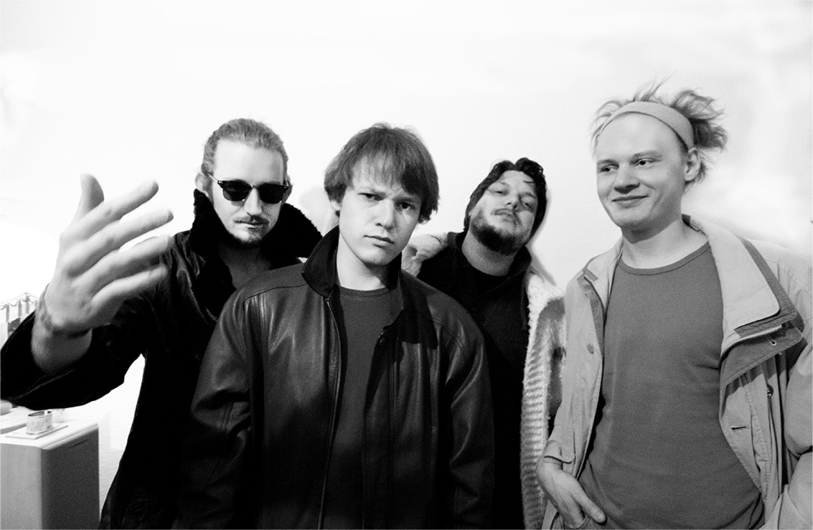

RHIZOMATIQUE
Live and improvised. Funk, jazz, house and techno.
About
RHIZOMATIQUE are n-1 people, usually four. Almost everything happens live and improvised, and every show is unique and cannot be reproduced.
We have known each other since our small-town days, and two of us are brothers. Today we live in Berlin and Dresden. Music, communication, installation and progression. Bass, guitar, keys, synths, flute and vocals meet Ableton in the RHZMTQ sound cosmos and fuse into funk, jazz, house and techno.
We perform like a band but work technically like a DJ: we mix everything ourselves and send out just a stereo sum.

Music
Mixtape 001, live sets and videos.
Upcoming
- Kater Blau, Berlin7 Nov 2026
Live (selection)
- SisyphosBerlin, 2025
- Klangtherapie FestivalPlankenfels, 2022
- Sektor EvolutionDresden, 2022 ▶ Recording
- 35c3Leipzig, 2018
- Festival für Selbstgebaute MusikBerlin, 2015–2019
- Mensch MeierBerlin, 2016–2019 ▶ Recording
- Garbicz FestivalPoland, 2016 ▶ Recording
- about:blankBerlin, 2015 ▶ Recording
Contact
Booking, enquiries, tech rider on request.